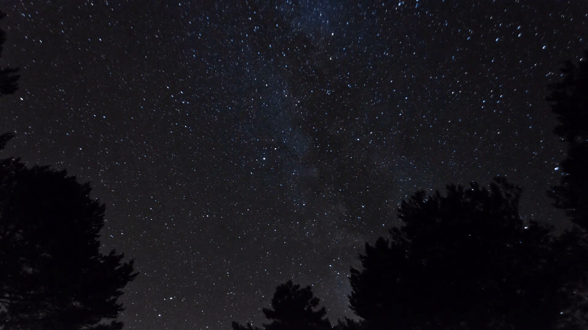
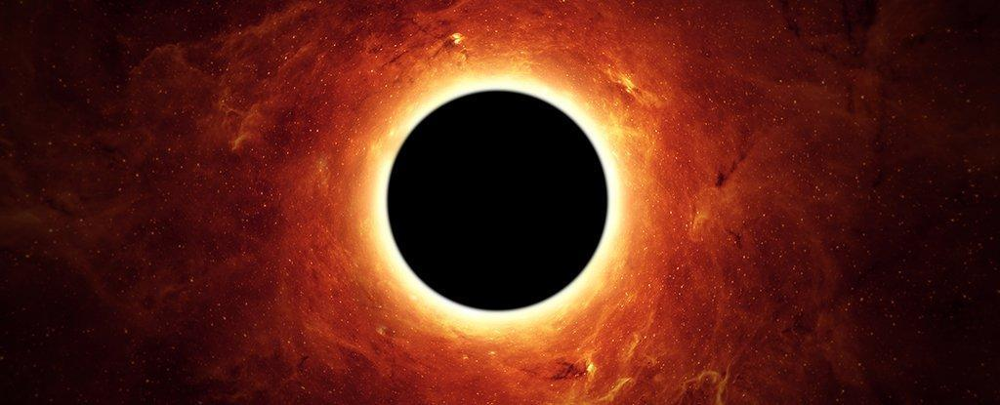
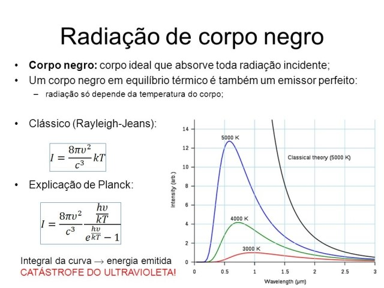
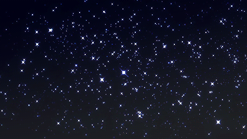
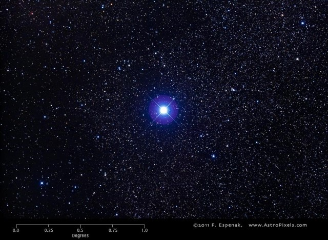

Curiosidades
1 – Qual o tamanho das estrelas?

Inicialmente, temos que dizer que as elas são muito grandes. Para se ter noção da dimensão, o Sol é uma estrela pequena. No entanto, ele tem um diâmetro de 1 milhão e meio de quilômetros. Isso é o que equivale a cerca de 1 milhão de planetas Terra. Além disso, cada estrela visível no céu é maior e mais brilhante do que o Sol.
A estrela Eta Carinae é 5 milhões de vezes maior do que o Sol. Enquanto isso, a estrela Betelgeuse, por sua vez, é 300 vezes maior que a Eta Carinae. Finalmente a estrela VYCanisMajoris é 1 bilhão de vezes maior do que o Sol, sendo assim a maior delas.
2 – Quantidade
Por incrível que pareça, você não enxerga milhões de estrelas. Por melhor que seja sua visão, só é possível vermos entre 2 mil e 2,5 mil estrelas. Além disso, isso ainda depende da região do planeta em que você está e da luminosidade da Lua.
3 – Corpos negros
É fato que as estrelas são corpos negros. Isso significa que elas absorvem 100% de toda a radiação eletromagnética incidente sobre elas. Veja a exemplificação:
Gráfico mostra a radiação sobre um corpo negro
4 – Cores das estrelas
Existem uma variedade de cores de estrelas. Elas são vermelhas, amarelas, brancas e azuis. As estrelas emitem luzes de cores diferentes em decorrência da sua temperatura. As vermelhas, com cerca de 3000º C, são as que têm a temperatura mais baixa. Enquanto isso, as azuis são as que têm a temperatura mais alta, cerca de 40000º C.
Apesar disso existe uma cor que você nunca verá em uma estrela. As estrelas emitem um espectro de cores que inclui o verde, mas na visão humana essa cor não é isolada.
5 – Estrela anã
O sol é verde-azul, já que seu comprimento de onde se encontram na faixa de transição dessas cores. Mas como explicamos, não existem estrelas verdes. Os olhos humanos enxergam o Sol como branco-amarelado.
Além disso o sol é uma “anã branca”, que se refere a estrelas mortas. Em relação ao seu tamanho, podemos nos referir a elas como anãs, gigantes ou supergigantes, sendo que estes dois últimos estágios acontecem durante a “velhice” da estrela. Por isso, o Sol é uma estrela anã.
6 - Estrelas não piscam
Apesar de parecer, as estrelas não piscam. A trepidação acontece por conta da atmosfera da Terra, que possui diferentes camadas e pode “embaralhar” a radiação luminosa desses astros. Consequentemente, elas parecem piscar. É decepcionante, porém, não passa de uma ilusão de ótica.
7 – Você enxerga longe
A Deneb é uma das estrelas visíveis mais distante que existe, sendo que se encontra a 30 quatrilhões de quilômetros da Terra. Para vê-la é necessário estar no Hemisfério Norte para isso. Porém, ao falarmos de galáxias, é possível vermos a de Andrômeda, que fica a 24 quintilhões de quilômetros daqui.
8 – Constelações
As constelações são um conjunto de estrelas que aparentemente são próximas a olho nu, mas estão extremamente distantes no espaço celeste. Dentre as principais constelações do universo vistas da Terra, as mais populares são: Cruzeiro do Sul, que é vista do hemisfério sul; Ursa Maior e Ursa Menor, que são vistas do hemisfério norte.
9 – As Estrelas Morrem?
As estrelas morrem após gastar o seu combustível. Primeiramente, as elas gastam o hidrogênio e, quando isso acontece, as elas envelhecem.
A seguir, começam a gastar o hélio e isso faz com que elas cresçam muito, de modo que sua temperatura diminui, tornando-a vermelha. Consequentemente, nesse estágio as estrelas são classificadas como gigantes vermelhas.
10 – O que é Estrela Cadente?
Estrela cadente é o nome popular para meteoro. Ela é o resulta do lançamento de uma partícula sólida que se evapora. O resultado é um efeito luminoso.
Quando visualizamos um rastro luminoso no céu durante a noite, podemos estar diante do fenômeno da estrela cadente. Além disso, as estrelas cadentes são formadas por fragmentos advindos do espaço interplanetário que se aquecem no momento em que atingem a atmosfera.